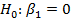
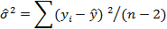
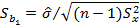

Regression was originally developed in 18th century to solve astronomy problems. Adrien-Marie Legendre; a French mathematician, formulated the least squares method in 1805. Later, in 1875, Francis Galton coined the term regression to explain the situation where the heights of descendants of tall ancestors tend to regress towards a normal average. For example, sons of tall fathers tend for their heights to be closer to the average (shorter) while sons of short fathers tend to also have their heights be closer to average (taller). This effect is referred as “regression to mediocrity”. This is an originating of the term “regression analysis”.
Regression analysis is a statistical process for estimating linear dependence relationships among variables. The main goal is to predict the response from one or more variables. Regression analysis can be used in prediction and forecasting. These usages, however, are overlap with the field of machine learning. Regression analysis can be used to answer the following questions:
In general, regression analysis is used when both independent and dependent variables are continuous. Nevertheless, regression can also apply to categorical independent variables and dichotomous dependent variables with some modifications.
The dependent variable is also referred to as the response variable or outcome variable, whereas, independent variable is also known as predictor variable.
Examples of regression analysis applied in business applications are:
Regression analysis consists of:
Simple linear regression is used for examining the relationship between two quantitative variables by linear equations that best summarize the relation, for instance, advertisement budget and the revenue. Typically, the dependent variable or response variable (y) measures an outcome of a study, whereas, the independent variable or explanatory variable (x) cause the change in the response variable. Simple linear regression involves only a single quantitative explanatory variable.
Can you specify the possible explanatory variable and response variable in following problems?
The (population) relationship between y and x can be formulated as:
Where  , independeent
, independeent
The unknown parameters include:
(Intercept) is the point where the line intercept y-axis
 (Slope) is the slope of the line or the increase in y per unit change in x. Note that,
(Slope) is the slope of the line or the increase in y per unit change in x. Note that,  is positive when y (linearly) increases as x increases.
is positive when y (linearly) increases as x increases.  is negative when y (linearly) decreases as x increases. This straight line often used to describe the trend of the data set.
is negative when y (linearly) decreases as x increases. This straight line often used to describe the trend of the data set.
Linear Regression (population)
Source: http://www.personal.kent.edu/~mshanker/personal/Classes/f06/ch13_F06.pdf
Line Type |
Regression Equation |
Intercept |
Slope |
Population |
|
|
|
Sample |
|
|
|
In most settings, we cannot determine the population parameters directly. Thus, the values are estimated from a sample. The sample regression line is an estimation of the population regression. The goal is to find the equation of line that fits the data the best. In other words, we need to find  and
and  such that the observed value (
such that the observed value ( ) and the fitted value or predicted value () is minimized. The fitted value
) and the fitted value or predicted value () is minimized. The fitted value  is given by
is given by
= 
The difference between the observed value ( ) and the fitted value is known as residual. Therefore, the residual is . If most of the residuals are small, it usually indicates that the model is good at explaining the response variable or the model has a good fit.
) and the fitted value is known as residual. Therefore, the residual is . If most of the residuals are small, it usually indicates that the model is good at explaining the response variable or the model has a good fit.
There are many methods for fitting a line such as minimize sum of prediction errors ( Unfortunately, there are many lines that satisfy this equation criterion. Thus, a better method is needed. The OLS is the most common method for estimating unknown parameters in linear regression models by minimizing the sum of squared residuals (SSE) or residual sum squares (RSS), which are the sum squared deviations (vertical distance) between each data point and the regression line. Subject to constraint that total error is 0.
=
=
The relationship between 2 variables can be simply explored using scatter plots and the correlation coefficient. For regression analysis, however, there is additional step that is a straight line is superimposed (overlaid) on a scatter plot to clarify the relationship.
Without going into calculation details, the coefficients  and
and  from least squares equation can be formulated as:
from least squares equation can be formulated as:
These are many statistical packages such as R, SPSS, SAS, and Excel that can be used to compute these coefficients and other regression measures as part of regression analysis.
Least squares regression consists of these properties:
Since there is only one predictor variable in simple linear regression, therefore, the main focus in on the slope . The slope indicates a change in the response y for a unit change of x.
T-test is used for testing the slope of the population to see whether there is any linear relationship between 2 variables.
 (there is no linear relationship between tested variables)
(there is a linear relationship)
Note that, we can also use one tail for the alternative hypothesis.
Test statistic: with DF (degree of freedom) = n-2
 is the slope coefficient of sample regression
is the slope coefficient of sample regression
 is the hypothesized slope
is the hypothesized slope
 is the standard error estimator of the slope
is the standard error estimator of the slope
will be rejected if Test statistic t fall in the critical region.
In this case, or , when is the level of confidence.
Estimation of confidence interval for  :
:
Estimation of confidence interval for  :
:


Scatter plot to test linear relationship
Source: http://www.cs.rice.edu/~johnmc/comp528/lecture-notes/Lecture9.pdf
Data transformation such as inverse, square root or log can improve normality. Note, that transformation can be used for correcting model assumption violations and improving the fit. However, the interpretation could be complicated.
Homoscedasticity (left) and Heteroscedasticity (right) Examples
Source: http://www.cs.rice.edu/~johnmc/comp528/lecture-notes/Lecture9.pdf
Errors are independent Errors are normally distributed
Source: http://www.cs.rice.edu/~johnmc/comp528/lecture-notes/Lecture9.pdf
Note that it is important to check the validity of the assumptions before continuing with the inference or prediction. The first two assumptions are fulfilled for the proper design study. The last 4 assumptions should not be violated otherwise the results may not be reliable. The violation consequences include Type I or Type II error, over or under-estimation of significance and/or effect sizes.
With the plot between y and x, we can investigate the followings:
Source: http://www-hsc.usc.edu/~eckel/biostat2/notes/notes10.pdf
Residual Analysis is a diagnostic method based mainly on the residuals. The model requires that . Thus, the standardized residuals should follow a standard normal distribution. Residual analysis is often done graphically using
Source: http://courses.washington.edu/b515/l7.pdf
Source: http://www.personal.kent.edu/~mshanker/personal/Classes/f06/ch13_F06.pdf
Correlation coefficient is a standard measurement of association or relationship between 2 variables. Typically, the symbol ρ denotes the population correlation (from the population data) and r is the sample correlation. Please keep in mind that correlation or association is not causation. As a reminder, regression is used to predict Y from X using a linear rule. Correlation describes how good the relationship is.
The Pearson (product-moment) correlation or simply called correlation coefficient (r) is a typical numerical measure of the strength and direction between two variables relationship. It can be calculated using the following formula:
Here are important properties of r:
When there is a strong linear relationship (r is close to +1 or -1), this suggests that Y can be accurately predicted. A value of r that is close to 0 indicates A weak correlation or the linear equation is not so helpful in Y prediction.
Different linear correlation coefficient values
Source: http://2012books.lardbucket.org/books/beginning-statistics/s14-02-the-linear-correlation-coeffic.html
The coefficient of determination indicates how much of the variation in one variable can be accounted for by the other variable or total variation in the dependent variable this is explained by variation in the independent variable. In general, the higher the , the better the model fits the data. The value of  is between 0 and 1 (no negative value). If there is no linear relationship between outcome and response variables,
is between 0 and 1 (no negative value). If there is no linear relationship between outcome and response variables,  is 0. If there is a perfect linear relationship between outcome and response variables,
is 0. If there is a perfect linear relationship between outcome and response variables,  is 1.
is 1.
Regression is used to predict y from x using a linear rule. Correlation describes how good the relationship is.
Coefficient of determination  is the proportion of the total variability explained by the regression model, and it indicates how well the model fits the data.
is the proportion of the total variability explained by the regression model, and it indicates how well the model fits the data.
Read the following examples on linear regression using R:
http://www.stat.columbia.edu/~martin/W2024/R4.pdf
http://www.princeton.edu/~otorres/Regression101R.pdf
http://www.cyclismo.org/tutorial/R/linearLeastSquares.html
Model diagnostics for regression can be found at:
http://www.stat.columbia.edu/~martin/W2024/R7.pdf
Eckel, S (2008) Linear Regression Approach, Assumptions and Diagnostic, USC.
Retrieved from: http://www-hsc.usc.edu/~eckel/biostat2/notes/notes10.pdf
Lindquist, A.M. (2009) Introduction to Statistics, course Notes. Columbia University.
Retrieved from: http://www.stat.columbia.edu/~martin/W2024/R4.pdf
Mellor-Crummey, J (2005) Linear Regression Models, Rice University.
Retrieved from: http://www.cs.rice.edu/~johnmc/comp528/lecture-notes/Lecture9.pdf
Torres-Reyna, O (2010) Getting Started in Linear Regression using R. Princeton University. Retrieved from: http://www.princeton.edu/~otorres/Regression101R.pdf
Shanker, M (2006), Fundamentals of Business Statistics, Kent State University,
Retrieved from: http://www.personal.kent.edu/~mshanker/personal/Classes/f06/ch13_F06.pdf